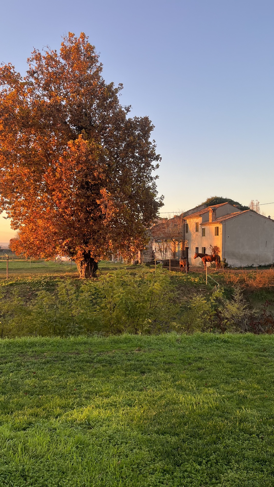
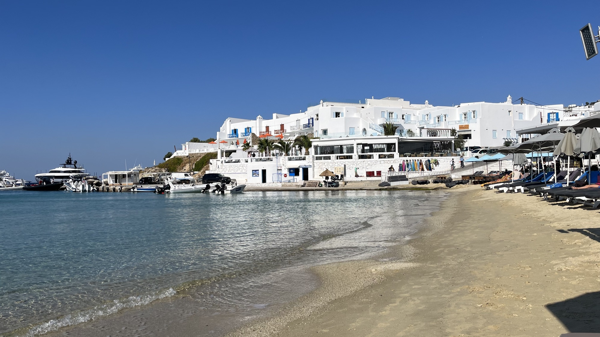
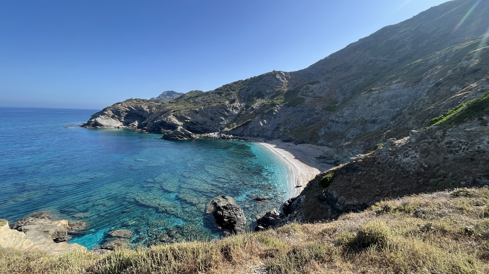
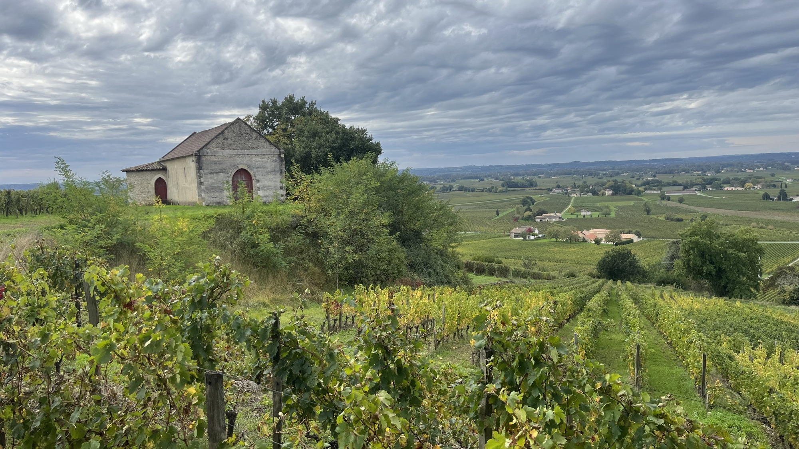

Where we focus
Give your stay the visibility it deserves
Data
Complete Google Analytics tracking, real-time performance dashboards, and Google Business Profile management — so every decision is backed by what's actually happening, not a guess.
Discoverability
SEO, GEO, and schema markup that puts your stay in front of travelers wherever they're actually looking — search engines, social platforms, and the AI assistants increasingly planning their trips.
Conversion
Targeted advertising for first-time visitors and retargeting for those who almost booked — turning more of that traffic into actual reservations.



